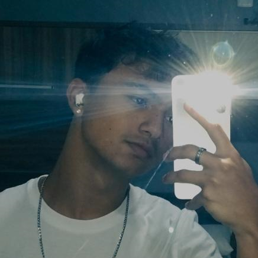

Desenvolvedor Principal
Hiago Rodrigues de Oliveira Silva
17 anosAjudou na recolha de imagens e áudios nas entrevistas e foi o principal desenvolvedor da estrutura HTML e dos estilos CSS do website.